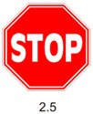

Водители транспортных средств могут пересекать железнодорожные пути только по железнодорожным переездам, уступая дорогу поезду (локомотиву, дрезине).
При подъезде к железнодорожному переезду водитель обязан руководствоваться требованиями дорожных знаков, светофоров, разметки, положением шлагбаума и указаниями дежурного по переезду и убедиться в отсутствии приближающегося поезда (локомотива, дрезины).
Запрещается выезжать на переезд:
при закрытом или начинающем закрываться шлагбауме (независимо от сигнала светофора);
при запрещающем сигнале светофора (независимо от положения и наличия шлагбаума);
при запрещающем сигнале дежурного по переезду (дежурный обращен к водителю грудью или спиной с поднятым над головой жезлом, красным фонарем или флажком, либо с вытянутыми в сторону руками);
если за переездом образовался затор, который вынудит водителя остановиться на переезде:
если к переезду в пределах видимости приближается поезд (локомотив, дрезина). Кроме того, запрещается:
объезжать с выездом на полосу встречного движения стоящие перед переездом транспортные средства;
самовольно открывать шлагбаум;
провозить через переезд в нетранспортном положении сельскохозяйственные, дорожные, строительные и другие машины и механизмы;
без разрешения начальника дистанции пути железной дороги движение тихоходных машин, скорость которых менее 8 км/ч, а также тракторных саней-волокуш.
В случаях, когда движение через переезд запрещено, водитель должен остановиться у стоп- линии, знака 2.5 "Движение без остановки запрещено" или светофора, если их нет — не ближе 5 м от шлагбаума, а при отсутствии последнего — не ближе 10 м до ближайшего рельса.

При вынужденной остановке на переезде водитель должен немедленно высадить людей и принять меры для освобождения переезда. Одновременно водитель должен:
при имеющейся возможности послать двух человек вдоль путей в обе стороны от переезда на 1000 м (если одного, то в сторону худшей видимости пути), объяснив им правила подачи сигнала остановки машинисту приближающегося поезда;
оставаться возле транспортного средства и подавать сигналы общей тревоги;
при появлении поезда бежать ему навстречу, подавая сигнал остановки.